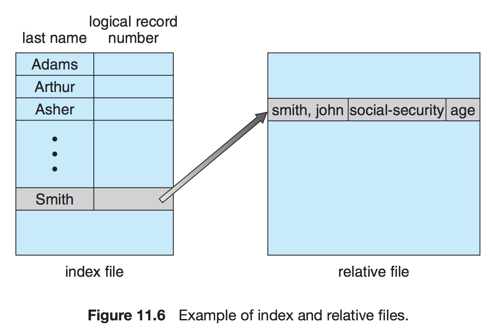
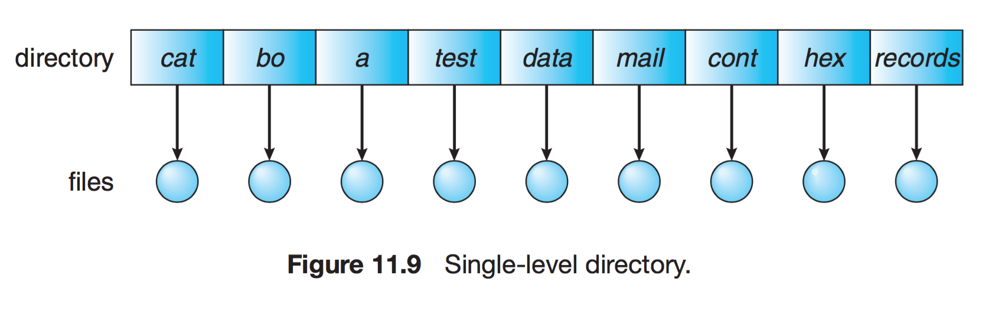
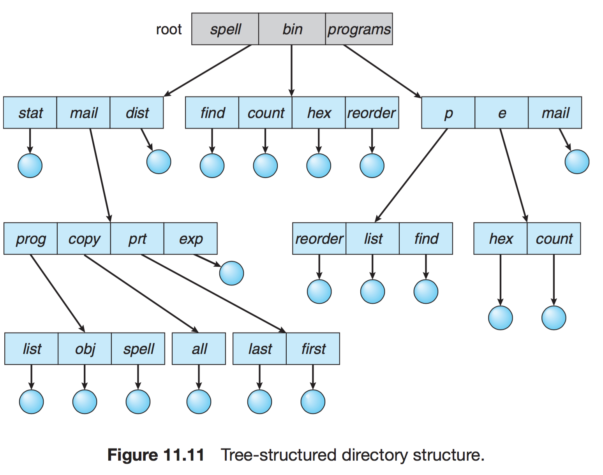
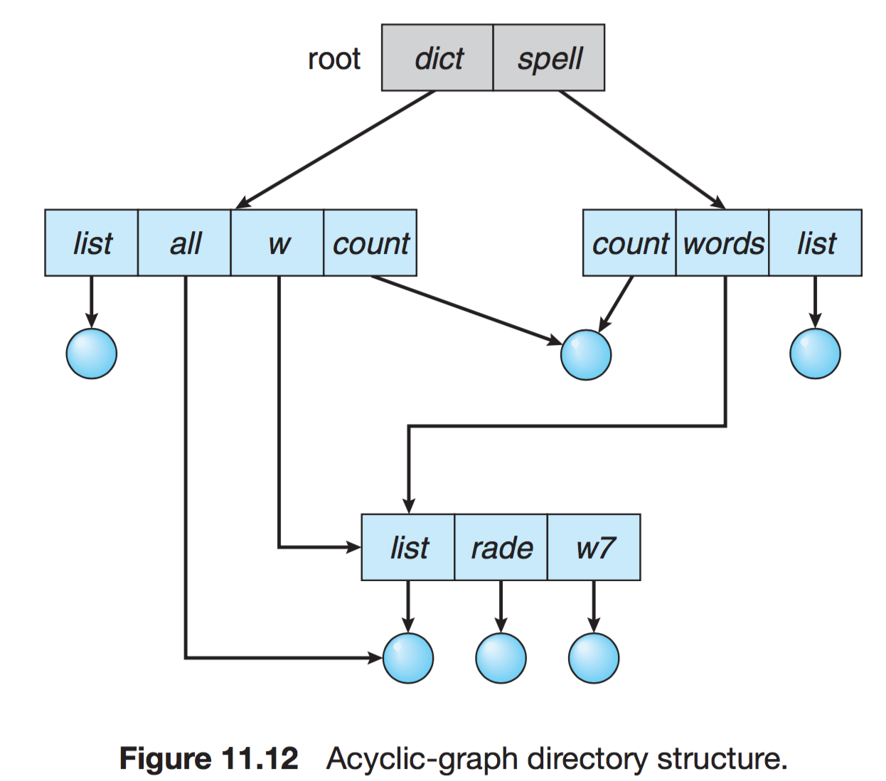

운영체제 정리 - 10장 파일 시스템
10장 파일 시스템
컴퓨터 기본 구조에서 파일을 관리하는 방법을 하드웨어적 측면과 소프트웨어적 측면에서 공부한다.
파일 시스템은 디스크에 존재하는 데이터와 프로그램의 저장과, 접근할 수 있는 기법을 제공한다.
10.1 파일 개념
컴퓨터는 정보들을 자기 디스크, 자기 테이프, 광 디스크와 같은 다양한 저장 매체에 저장할 수 있다. 운영체제는 저장장치의 물리적 특성을 추상화하여 논리적 저장 단위, 즉 파일 을 정의한다. 파일은 운영체제에 의해 물리 장치들로 맵핑되고, 일반적으로 비휘발적 특성을 지니기 때문에, 전원이 끊어진 상황에서도 정보들을 영구히 보존할 수 있다.
사용자의 입장에서 파일은 논리적 보조 저장장치의 가장 작은 할당 단위이다.
파일은 일반적으로 프로그램과 자료로 나누어진다.
- 프로그램 : 소스 프로그램, 목적 프로그램으로 나누어 진다.
- 자료 : 숫자,문자,이진수, 자유 형식이거나 정해진 형식 등, 저장할 수 있는 모든 것이 자료가 될 수 있다.
10.1.1 파일 속성
사용자의 편의를 위해 파일에 이름을 부여하고, 하나의 문자열로 나타낸다. 시스템에 따라 대소문자를 구분하기도, 안하기도 한다.
일단 파일이 만들어지면 그 파일은 프로세스, 사용자, 시스템으로부터 독립하게 된다. 한 사용자가 파일을 생성하고, 다른 사용자가 복사하거나 e-mail로 첨부하여 보낼 수 있다.
일반적으로 파일의 속성은 다음과 같다.
- 이름 : 사람이 읽을 수 있는 형태로 유지되는 유일한 정보
- 식별자 : 파일 시스템 내에서 파일을 식별하는 고유의 번호 PK
- 타입 : 여러 타입의 파일을 제공하는 시스템을 위해 필요
- 위치 : 장치 내에서 파일의 위치를 가리키는 포인터
- 크기 : 파일의 현재 크기
- 보호 : 접근 제어 정보
- 시간, 날짜, 사용자 식별 : 생성, 최근 변경, 최근 사용 등에 대한 정보
모든 파일에 대한 정보는 보조 저장장치에 상주하는 디렉토리 구조 내에 유지된다. 파일과 디렉터리 모두 비휘발적 성질을 가져야 하므로, 저장 장치 상에 저장되고, 필요할 때 조금씩 메모리로 가져와야 한다.
10.1.2 파일 연산
운영체제가 파일을 관리하기 위해 사용하는 시스템 콜과 그것들의 조합.
- 파일 생성 : 사용할 수 있는 공간을 찾고 파일을 할당한다, 또한 파일이 디렉터리에 만들어져야 한다.
- 파일 쓰기 : 파일 이름과 기록될 정보를 명시하는 시스템 콜을 호출한다. 시스템은 파일 내의 다음 쓰기가 일어날 위치를 가리키는 쓰기 포인터를 유지하고 있어야 한다. 쓰기 포인터는 쓰기가 일어날 때마다 갱신된다.
- 파일 읽기 : 파일 이름과 피일이 읽혀 들어갈 블록의 위치를 명시하는 시스템 콜을 호출한다. 다음 읽기가 일어날 파일 안의 위치를 기록하는 읽기 포인터를 유지해야 한다.
프로세스는 일반적으로 파일 읽기 나 파일 쓰기 중 한 가지를 하고 있기 때문에, 대부분의 시스템은 한 개의 현재 파일 위치 포인터 를 가진다. 읽기,쓰기 연산 모두 이 포인터를 이용하여 공간을 절약하고, 복잡성을 감소시킨다. - 파일 안에서의 위치 재설정 : 디렉터리에서 적합한 항목을 탐색하고, 현재 파일 위치를 주어진 값으로 설정한다.
- 파일 삭제 : 지명된 파일을 디렉터리에서 찾는다, 발견하면 파일이 차지하는 공간을 방출하고 디렉터리 항목을 삭제한다.
- 파일 절단 : 파일의 내용을 지우고, 속성만을 남긴다.
위에 있는 6개의 연산은 파일 조작에 필요한 최소한의 연산이다. 새로운 정보를 추가하는 첨가(appending) 나 재명명(renaming) 등이 더 있다.
운영체제는 모든 열린 파일에 대한 정보를 갖는 열린 파일 테이블(open file table) 을 유지한다.
시스템 콜 open()은 전형적으로 열린 파일 테이블의 항목에 대한 포인터를 리턴한다.
여러 프로세스가 동시에 파일을 열 수 있는 환경에서는 open()과 close() 연산의 구현은 더 복잡한데, 보통 운영체제는 프로세스별 테이블과 범 시스템 테이블을 사용한다.
* 프로세스별 테이블 : 파일 포인터, 접근 권한
* 범 시스템 테이블 : 프로세스에 독립적인 정보들 : 디스크 상의 파일 위치, 접근 날짜, 크기
오픈 파일 테이블
파일이 하나의 프로세스에 의해 열려 있다. 이때 다른 프로세스가 open()을 호출한 경우 오픈 파일 테이블에 범 시스템 테이블 에 있는 정보를 가리키는 새로운 포인터가 생긴다.
일반적으로 오픈 파일 테이블은 파일을 연 프로세스 수를 가리키는 오픈 계수 (open count)를 각 파일에 연관지어 둔다. close() 콜은 이 오픈 계수를 감소시키고 계수가 0이 되면 해당 정보를 테이블에서 제거한다.
열린 파일들을 관리하기 위해 필요한 몇 가지 정보들
- 파일 포인터 : 가장 최근의 읽기/쓰기 위치를 가리킨다. 파일을 오픈한 프로세스 당 하나가 만들어진다.
- 파일 오픈 계수 : 파일의 총 열린 횟수와 닫힌 횟수를 추적하며 계수값이 0이면 테이블에서 해당 항목을 제거한다.
- 파일의 디스크 위치 : 대부분의 파일 연산은 데이터를 변경하도록 요구, 매 연산마다 디스크에서 읽는 것을 피하기 위해 메모리에 저장한다. (한 번 메모리에 저장해 두었다가 파일을 닫을 때 다시 디스크로 옮긴다는 것 같다.)
접근 권한 : 각 프로세스는 한 파일을 하나의 접근 모드로 연다. 이 정보는 프로세스별 테이블에 저장된다.
파일의 잠금
몇몇 운영체제는 열려진 파일을 잠금 할 수 있는 기능을 제공한다. 한 프로세스가 파일을 잠그면 다른 프로세는 접근 불가.
- 강제적 파일 잠금 : 어떤 프로세스가 배타적 잠금을 획득한 경우, 운영체제는 다른 프로세스가 파일에 접근하는 것을 차단한다. 잠금의 무결성이 보장된다. Windows
- 권고적 파일 잠금 : 프로세스들은 잠금의 상태를 찾을 수 있고 무엇을 해야 할지 결정한다. 잠금이 적절히 획득되고 해제되는 것에 대한 보장은 소프트웨어 개발자의 몫이다. Unix
- 파일 잠금의 사용은 동기화처럼 특별히 주의해야 한다. 두 개 이상의 프로세스가 파일 잠금을 얻으려고 하다가 교착 상태에 빠질 수 있으므로 특별한 대책이 필요하다.
10.1.3 파일 타입
운영체제는 파일 타입을 인식하여 합당한 연산을 실행할 수 있다. 예를 들어 binary object 파일을 출력하려고 한다면 쓰레기값들을 만들어낸다. 그 파일은 실행파일이니까.
- 확장자 : 파일 이름의 한 부분으로 하여금 파일의 타입을 나타내도록 하는 것. 대체로 마침표를 이용하여 파일 이름과 확장자를 구분한다. 또한 확장자를 이용하여 연산의 유형을 표시할 수 있다. 파일에 대한 힌트
- 확장자 자체는 솔직히 있어도 되고 없어도 된다. 다만 구분과 표시를 위해 사용할 뿐
10.1.4 파일 구조
UNIX, MS-DOS의 경우 파일의 형태, 구조에 대하여 최소한의 파일 구조를 둔다. 예를 들어 UNIX의 경우 파일을 단순히 8 바이트의 단순한 집합으로 인식하여, 이 내부구조를 운영체제가 해석하지 않는다.
시스템 차원에서의 지원이 없는 대신 응용 프로그램들이 각자의 프로그램에 사용된느 파일 구조에 대해 적절한 해석과 운용을 책임진다. 단 프로그램을 로딩하고 수행할 수 있는 실행 파일은 운영체제가 읽을 수 있도록 지원해야 한다.
10.1.5 파일의 내부 구조
디스크 시스템의 경우 보통 섹터에 의해 결정되는 블록 크기를 가진다. 또한 어떠한 경우든 파일은 일련의 블록으로 간주된다. 여러 개의 논리 레코드를 하나의 물리 레코드(블록)에 담기도 하는데 이를 팩킹이라고 한다.
기본적인 I/O 기능은 블록 단위로 실행되며, 그렇기 때문에 내부 단편화 문제가 발생할 수 있다.
10.2 접근 방법
파일에 접근하여 데이터를 읽는 방법
10.2.1 순차 접근
가장 간단한 방법으로 파일의 정보가 레코드 순서대로 차례차례 처리된다.

현재 위치를 가리키는 포인터에서 읽기/쓰기 시스템 콜이 발생한 경우 포인터를 앞으로 보내면서 읽거나/쓴다. 뒤로 돌아가기 위해서는 지정한 offset 만큼 되감기를 하여야 한다.
테이프 모델에 기반을 두고 있다.
10.2.2 직접 접근
직접 접근 또는 상대 접근 특별한 순서 없이 빠르게 레코드를 읽고 쓸 수 있다. 디스크 모델에 기반을 두며 이는 무작위 파일 블록에 대한 임의 접근(Random Access)를 허용하기 때문이다. 직접 접근의 경우 읽기나 쓰기의 순서에 제약을 가하지 않는다.
대규모 정보를 즉각적으로 접근하는 데 유용하여 데이터베이스에 이용된다.

- 현재 위치를 가리키는 변수 cp만 유지된다면 직접 접근 파일을 가지고 순차 파일 기능을 쉽게 구현할 수 있다.
10.2.3 기타 접근 방법
직접 접근 파일에 기반을 두고 색인을 구축한다. 크기가 큰 파일을 입출력 탐색할 수 있게 도와준다.

10.3 디렉터리와 디스크 구조
통상 수천 수만 수십억 개의 파일을 하드디스크, 광학 디스크,반도체 디스크를 포함한 임의 접근장치에 저장하는 방법
매우 많으므로 체계적으로 구성을 갖추어야 한다. 그래서 디렉터리의 사용을 수반한다.
- 볼륨 : 파일 시스템을 포함하고 있는 임의의 개체, 각 볼륨을 논리적인 가상 디스크로 취급될 수 있다. 하나 이상의 운영체제를 저장하고 부팅, 실행시킬 수 있다. 섹터들의 집합으로 연속공간이 아니어도 볼륨으로 볼 수 있다.
- 디바이스 디렉터리(디렉터리) : 그 볼륨에 있는 모든 파일에 대한 이름, 위치, 크기, 타입과 같은 정보를 기록한다.
- 파티션 : 연속된 저장 공간을 하나 이상의 연속되고 독립적인 영역으로 나누어서 사용할 수 있도록 정의한 규약

10.3.1 저장장치의 구조
범용 컴퓨터 시스템은 다수의 저장장치를 가지고 그 장치들은 파일 시스템을 저장할 수 있는 볼륨으로 분할된다.
파일 시스템이 없을 수도 있으며, 다양한 종류의 파일 시스템을 가질 수도 있다.
10.3.2 디렉터리 개관
디렉터리는 파일 이름을 해당 디렉터리 항목으로 변환해주는 심벌 테이블로 볼 수 있다. 따라서 다양한 방법으로 구성될 수 있다.
- 파일 찾기 : 특정 파일에 해당하는 항목을 찾기 위해 탐색이 가능해야 한다. 특정 패턴과 일치하는 이름을 갖는 모든 파일을 찾을 수 있어야 한다.
- 파일 생성 : 새로운 파일들을 생성하여 디렉터리에 추가한다.
- 파일 삭제 : 디렉터리에서 파일 제거
- 디렉터리 나열 : 존재하는 파일들을 나열하고 내용을 보여준다.
- 파일의 재명명 : 이름 바꾸기
- 파일 시스템의 순회(Traverse) : 파일 시스템의 모든 디렉터리를 순회하면서 모든 파일들을 액세스할 필요가 있다. 전체 파일 시스템을 주기적으로 백업할 때.
10.3.3 1단계 디렉터리
가장 간단한 구조의 디렉터리
파일이 많아지거나 다수의 사용자가 사용할 경우 심각한 제약이 따른다.
각 파일들은 서로 유일한 이름을 가진다. 서로 다른 사용자라 하더라도 같은 이름을 사용할 수 없다.

10.3.4 2단계 디렉터리
사용자들에게 개별적인 디렉터리를 만들어 준다.
- UFD(User File Directory) : 자신만의 사용자 파일 디렉터리, 비슷한 구조를 가지고 있지만 오직 한 사용자만의 파일을 저장한다
- MFD(Master File Directory) : 사용자의 이름이나 계정 번호로 색인되어 있고, 각 엔트리는 사용 자의 UFD를 가리킨다.

특정한 파일을 참조할 시 사용자의 UFD 에서만 탐색하므로 파일 이름이 충돌하는 문제가 사라진다.
다른 사용자의 파일에 접근해야 하는 경우는 단점이 된다.
10.3.5 트리 구조 디렉터리
2단계 구조 디렉터리를 확장하여 다단계 트리 구조로 만들 수 있다. 사용자들이 자신의 서브디렉토리를 만들어서 파일을 구성할 수 있게 한다. 트리 구조는 하나의 루트 디렉터리를 가지며 시스템의 모든 파일은 고유 경로를 가진다.
디렉터리의 각 항목은 한 비트를 사용하여 일반 파일인지 (0) 디렉터리 파일인지(1)를 구분한다.

통상적으로 각 프로세스는 현재 디렉터리를 가지고 있다.
디렉터리의 경로명을 지정할 때에는 절대경로명과 상대경로명 두 가지가 있다.
10.3.6 비순환 그래프
사이클이 없는 그래프는 디렉터리들이 서브디렉터리와 파일들을 공유할 수 있도록 허용한다.
트리 구조의 디렉터리를 자연스럽게 일반화한 방식이다.
절대경로명/상대경로명을 이용하여 링크 라고 불리는 새로운 디렉터리 항목을 만들 수 있다.
단순한 트리 구조보다는 융통성이 있는 대신에 더 복잡하다.
파일을 삭제할 때 대상이 없는 포인터(dandling pointer) 를 남긴다.
참조되는 파일에 참조 계수를 두어 계산한다. 참조 계수가 0이 되면 현재 파일을 참조하는 링크가 존재하지 않으므로 파일을 삭제할 수 있다.

10.3.7 일반 그래프 디렉터리
디렉터리에서 순환이 허용되는 겨우 무한 루프에 빠질수도 있다. 따라서 순환이 발생하지 않도록 하위 디렉터리가 아닌 파일에 대한 링크만 허용하거나 가비지 컬렉션을 이용하여 전체 파일 시스템을 순회하고, 접근 가능한 모든 것을 표시한다.
디렉토리를 순회할 때 링크가 있으면 우회하여 순환을 피할 수도 있다.

10.4 파일 시스템 마운팅
파일이 사용되기 전에 열리는 것 처럼 프로세스들이 파일 시스템을 사용하기 전에는 먼저 마운트해야 한다.
디바이스 이름과 마운트 포인트 위치를 전달하여 마운트한다.
시스템은 기능을 명확하게 하기 위해 Semantics를 부여한다. (정책)
시스템 파일 디렉토리에는 마운트가 불가하다.
마운트 된 이후에는 마운트 된 파일 시스템만 접근하게 한다.
-
두 개의 파일 시스템이 마운트 되기 전 삼각형은 서브디렉토리를 의미한다.
b 파일 시스템이 a의 /users에 마운트된 경우. 기존 a 시스템에 있뎐 /users/fred/help는 마운트가 해제되기 전까지 접근할 수 없다.
10.5 파일 공유
10.5.1 다수의 사용자
디렉터리 구조가 사용자 간의 파일 공유를 허용한다면, 시스템은 파일 공유를 중재해야 한다. 대부분의 시스템은 파일/디렉터리의 소유자,그룹 이라는 개념을 사용하는 형태로 발전해왔다.
UNIX 시스템의 소유자는 파일에 대한 모든 작업을 실행할 수 있지만 그룹 멤버는 일부 작업만을 실행할 수 있다.
10.5.2 원격 파일 시스템
네트워크를 이용하여 원거리 컴퓨터 간의 통신을 하면서 파일 시스템을 공유하는 방법.
10.5.2.1 클라이언트 서버 모델
- 서버 : 파일을 제공하는 컴퓨터
- 클라이언트 : 파일을 요청하는 컴퓨터
- 클라이언트의 신원 확인 : ip나 네트워크 이름 등의 식별자는 도용(spoofing)이나 모방(imitation)될 수도 있기에 인증 과정이 필요하다.
원격 파일시스템이 마운트되면 로컬 파일 시스템에 적용하는 semantic(정책)과 유사한 의미를 적용하거나 다른 의미를 사용할 수도 있다.
10.5.2.2 분산 정보 시스템
- DFS
10.5.2.3 고장 모드
- 고장 모드를 따로 두고 파일 시스템에 오류가 발생시 대처
10.5.3 일관성의 의미 Consistency Semantics
파일 시스템의 관리 정책의 일관성에 대하여
10.5.3.1 UNIX의 semantics
열린 파일에 대한 사용자의 쓰기는 동일 파일을 연 다른 사용자들에게 즉시 보인다.
공유 모드 : 사용자들이 파일 내의 현재 위치 포인터를 공유한다. 여럿이서 파일 위치 포인터를 같이 쓴다
10.5.3.2 세션 semantics
앤드류 파일 시스템
열린 파일에 대한 쓰기는 동시에 같은 파일을 연 다른이에게 보이지 않는다.
파일이 닫히면 파일에 대한 변경들이 나중에 시작되는 세션에서만 보인다.
사용자들은 지연 없이 그들의 파일 이미지에 대해 병행적으로 읽기와 쓰기 모두를 실행할 수 있다.
10.5.3.3 불변 공유 파일의 semantics
파일이 공유된다고 선언되면, 더이상 변경 불가능하게 만든다
10.6 보호
10.6.1 접근의 타입
접근을 허용하지 않거나/자유롭게 접근하거나 이 두가지의 접근법으로는 다양한 방법의 파일 접근/공유 절차를 커버할 수 없다. 그래서 우리는 통제된 접근 을 구현해야 한다.
사용자가 어떤 접근 타입을 가지고 오는지에 따라 파일 연산을 통제시킬 수 있다.
- 읽기
- 쓰기
- 실행
- 추가
- 삭제
- 리스팅
10.6.2 접근 제어
파일과 디렉터리에 접근 제어 리스트를 둔다(ACL Access Control List)
특정 사용자가 어떤 파일에 접근할 경우 리스트를 보고 허용 여부를 결정한다.
- 소유자 : 파일의 생성자
- 그룹 : 파일을 공유하며 소유자와 유사한 접근이 필요한 사용자들의 집합
- 모든 사람 : 시스템에 있는 모든 사용자들
유닉스의 경우 3 파일에 3비트 rwx 필드를 두어 접근 권한을 관리한다.
윈도우의 경우는 gui를 통해서 접근이 가능하다.
출처
Operating System Concepts 9th Edition (January 14, 2013)
by Abraham Silberschatz